Differential Expression and Pathway Enrichment
Chomchon Uansiri
2026-10-06
Source:vignettes/OHMmy-differential-expression.Rmd
OHMmy-differential-expression.RmdOverview
This article goes from cluster markers to pathways and pseudo-bulk differential expression.
| Step | Functions |
|---|---|
| Cluster markers | FindTopMarkersAndHeatmap() |
| Marker tables across conditions |
plot_gene_markers_with_dendro(),
plot_split_dotplots_by_gene_cluster()
|
| Pathway enrichment |
run_global_gsea(), run_global_ora()
|
| Pseudo-bulk DESeq2 visualisation |
generate_volcano_trio(),
get_top_mixed_genes(),
generate_and_save_heatmap()
|
library(Seurat)
library(OHMmy)
library(dplyr)
library(ggplot2)
source("ohmmy-vignette-helpers.R")
library(msigdbr) # MSigDB gene sets
library(DESeq2) # pseudo-bulk differential expression
pbmc <- load_pbmc3k_ohmmy() # built in "Data Processing, Integration, and Clustering"
out_dir <- file.path(tempdir(), "OHMmy-differential-expression")
dir.create(out_dir, recursive = TRUE, showWarnings = FALSE)The classic GSEA enrichment plots and the volcano plots additionally use the suggested packages enrichplot and EnhancedVolcano. OHMmy calls them internally, so they only need to be installed.
1. Cluster markers with FindTopMarkersAndHeatmap()
FindTopMarkersAndHeatmap() runs
FindAllMarkers() on the active identities, or
FindMarkers() for a single pairwise comparison when
compare is given. It uses logfc.threshold = 0
and min.pct = 0, so the complete ranked table needed for
GSEA is kept. Markers are then ranked by a combined relevance score,
|log2FC| x |pct.1 - pct.2| / p_adj, filtered by the three
marker_* thresholds, and the top top_n per
cluster are drawn in a DoHeatmap. Three CSV files are
written: all markers, a GSEA/ORA-ready copy, and the filtered top
markers.
Idents(pbmc) <- "cell_type"
mk <- FindTopMarkersAndHeatmap(
seurat_obj = pbmc,
sample_name = "pbmc3k_celltype",
top_n = 6,
onlyPos = TRUE,
output_dir_base = file.path(out_dir, "markers"),
height = 11,
dpi = 100
)
names(mk)
#> [1] "top_markers" "heatmap" "markers" "output_dir"
mk$top_markers %>%
group_by(cluster) %>%
slice_head(n = 3) %>%
dplyr::select(cluster, gene, avg_log2FC, pct.1, pct.2, p_val_adj, score)
#> # A tibble: 21 × 7
#> # Groups: cluster [7]
#> cluster gene avg_log2FC pct.1 pct.2 p_val_adj score
#> <fct> <chr> <dbl> <dbl> <dbl> <dbl> <dbl>
#> 1 CD4 T CD3D 1.84 0.875 0.238 0 11707548842.
#> 2 CD4 T MAL 4.22 0.273 0.023 0 10544703625.
#> 3 CD4 T IL7R 2.14 0.664 0.195 0 10059451479.
#> 4 CD8 T GZMK 4.57 0.587 0.053 0 24411707948.
#> 5 CD8 T CCL5 3.25 0.953 0.235 0 23328815222.
#> 6 CD8 T NKG7 2.55 0.973 0.213 0 19406875071.
#> 7 NK GZMB 5.89 0.972 0.072 0 52972497610.
#> 8 NK FGFBP2 5.40 0.922 0.064 0 46355989739.
#> 9 NK PRF1 5.11 0.972 0.11 0 44009493902.
#> 10 B CD79A 6.85 0.938 0.042 0 61335103114.
#> # ℹ 11 more rows
mk$heatmap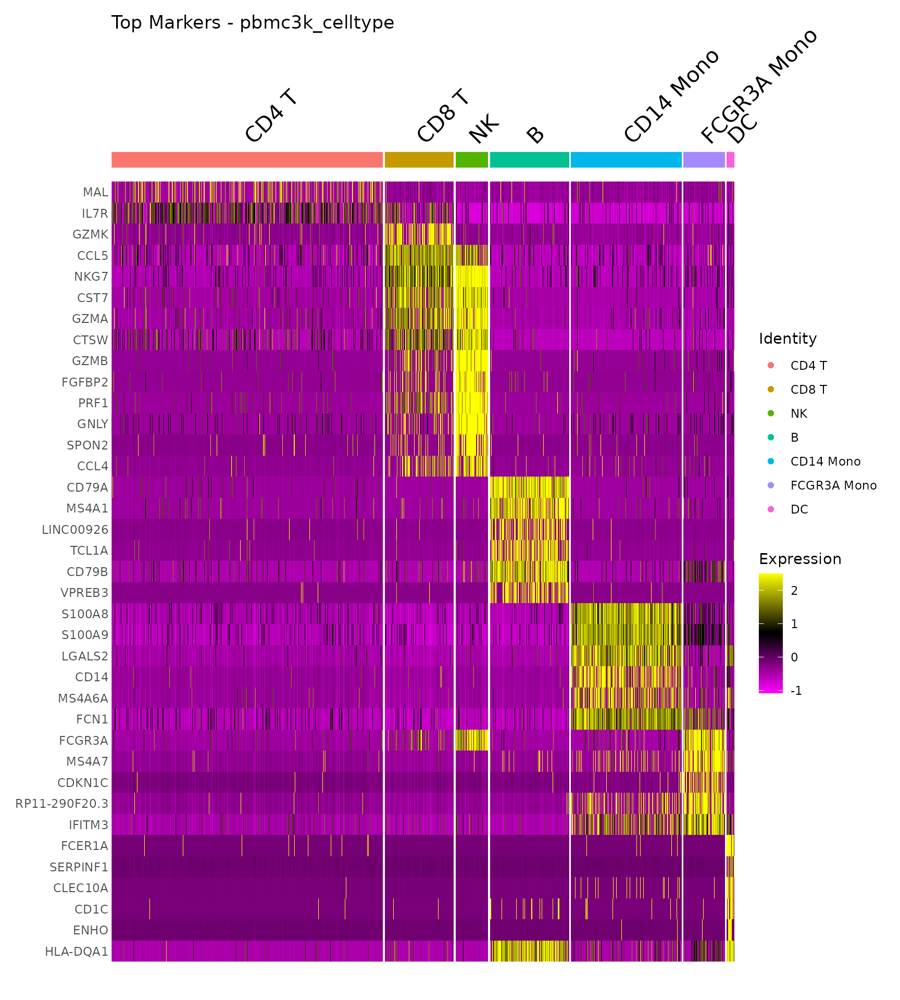
Pairwise comparison
With compare = c(ident.1, ident.2), the function runs a
single FindMarkers() test. It adds the gene
and cluster columns (each gene is assigned to the identity
in which it is higher), so the output has the same format as the
all-cluster version. With onlyPos = FALSE, genes enriched
on both sides are kept.
mk_mono <- FindTopMarkersAndHeatmap(
seurat_obj = subset(pbmc, subset = cell_type %in% c("CD14 Mono", "FCGR3A Mono")),
sample_name = "pbmc3k_monocytes",
compare = c("FCGR3A Mono", "CD14 Mono"),
onlyPos = FALSE,
top_n = 10,
output_dir_base = file.path(out_dir, "markers"),
height = 7,
dpi = 100
)
table(mk_mono$top_markers$cluster)
#>
#> CD14 Mono FCGR3A Mono
#> 10 10
mk_mono$heatmap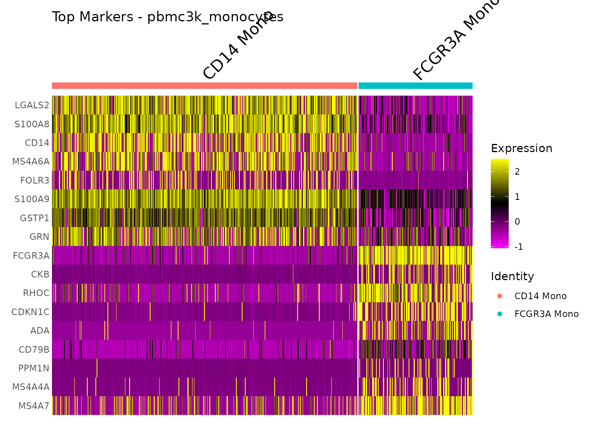
2. Comparing marker tables across conditions
When markers are computed separately for each condition, batch or
integration method, the question becomes how the marker profiles differ
between those runs. Two functions take such a combined table. It needs
the columns gene, cluster,
avg_log2FC, diff (=
pct.1 - pct.2) and an identifier column.
Here we compute cluster markers separately for each of the six severity-by-batch groups of the simulated cohort.
pbmc$group <- paste(pbmc$severity, pbmc$batch, sep = "_")
marker_tbl <- bind_rows(lapply(sort(unique(pbmc$group)), function(g) {
sub <- subset(pbmc, subset = group == g)
Idents(sub) <- "seurat_clusters"
FindAllMarkers(sub, only.pos = TRUE, logfc.threshold = 0.25, min.pct = 0.1, verbose = FALSE) %>%
mutate(diff = pct.1 - pct.2, group = g)
}))
marker_tbl %>% dplyr::count(group)
#> group n
#> 1 Healthy_Batch_1 3639
#> 2 Healthy_Batch_2 2653
#> 3 Mild_Batch_1 4279
#> 4 Mild_Batch_2 3897
#> 5 Severe_Batch_1 4086
#> 6 Severe_Batch_2 3867
plot_gene_markers_with_dendro()
Averages the marker statistics per gene and group, clusters the
groups (Ward.D2) and draws a dot plot. Dot size shows log2FC and colour
shows the difference in detection rate. The clusters in which each gene
was a marker are written above the dots, and the dendrogram is attached
beside the plot. genes accepts a vector or a single regular
expression.
gm <- plot_gene_markers_with_dendro(
df = marker_tbl,
genes = c("CD14", "LYZ", "S100A8", "S100A9", "FCGR3A", "MS4A7",
"GNLY", "NKG7", "MS4A1", "CD79A", "IL7R", "CCR7", "PPBP"),
id_col = "group",
plot_title = "Canonical markers across cohort groups",
output_dir = file.path(out_dir, "marker_dendro")
)
gm$combined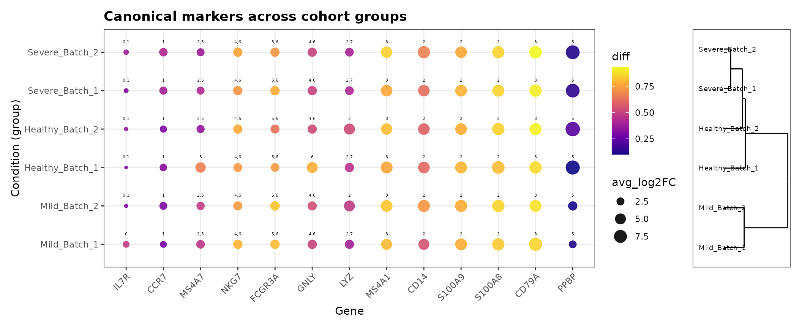
plot_split_dotplots_by_gene_cluster()
For gene families with many members, this function plots every
gene x cluster combination. It splits the x-axis into
n_splits dot plots and saves a global dendrogram of the
groups. Here we use a regular expression to select all HLA class II
genes.
plot_split_dotplots_by_gene_cluster(
df = marker_tbl,
gene_regex = "^HLA-D",
id_col = "group",
n_splits = 2,
plot_title_prefix = "HLA class II markers",
output_dir = file.path(out_dir, "split_dot")
)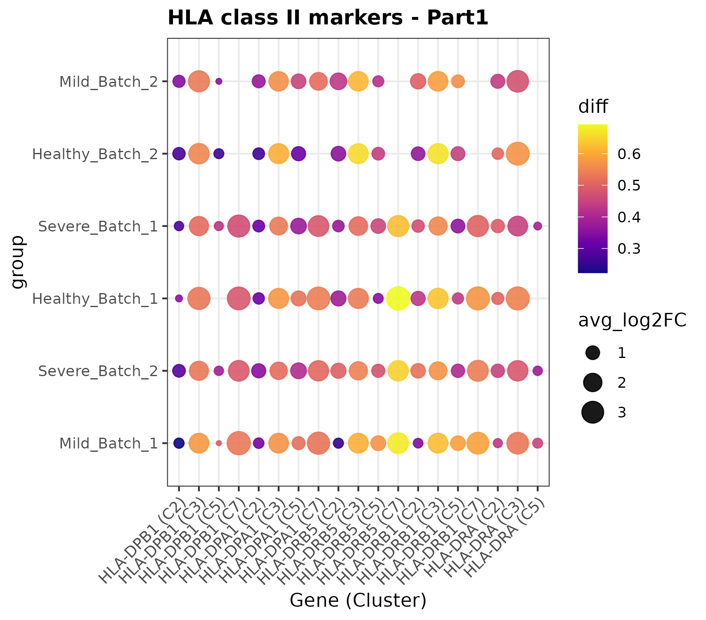
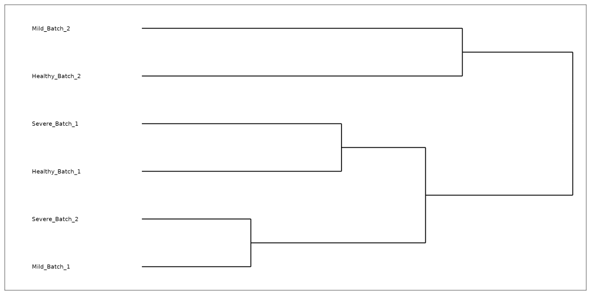
3. Pathway enrichment
Both enrichment pipelines take a marker table with one block of genes
per cluster and a two-column TERM2GENE
table, here the MSigDB Hallmark collection. If the table also has a
column whose name contains cell_type, results are
additionally summarised per cell type. We therefore compute markers for
the nine seurat_clusters (two of which are CD4 T) and
attach their cell type.
hallmark <- msigdbr(species = "Homo sapiens", collection = "H")[, c("gs_name", "gene_symbol")]
Idents(pbmc) <- "seurat_clusters"
mk_clusters <- FindTopMarkersAndHeatmap(
seurat_obj = pbmc,
sample_name = "pbmc3k_clusters",
onlyPos = FALSE, # GSEA needs both tails of the ranking
output_dir_base = file.path(out_dir, "markers"),
dpi = 72
)
enrich_df <- mk_clusters$markers %>%
mutate(cluster = as.character(cluster),
cell_type = as.character(pbmc$cell_type[match(cluster, pbmc$seurat_clusters)]))
dim(enrich_df)
#> [1] 18943 8
dplyr::as_tibble(dplyr::distinct(enrich_df, cluster, cell_type))
#> # A tibble: 8 × 2
#> cluster cell_type
#> <chr> <chr>
#> 1 0 CD4 T
#> 2 1 CD4 T
#> 3 2 CD14 Mono
#> 4 3 B
#> 5 4 CD8 T
#> 6 5 FCGR3A Mono
#> 7 6 NK
#> 8 7 DCGene Set Enrichment Analysis: run_global_gsea()
For every cluster, genes are ranked by avg_log2FC and
tested with clusterProfiler::GSEA(). A first pass collects
the NES range of all clusters, so every per-cluster dot plot shares the
same x-axis and can be compared directly. The function saves per-cluster
NES dot plots, a classic enrichment plot for the top pathway of each
cluster, alphabetical and hierarchically clustered overview dot plots,
signed-significance plots (global and per cell type), and CSV
summaries.
gsea_dir <- file.path(out_dir, "gsea")
gsea_res <- run_global_gsea(
GSEA_df = enrich_df,
m_t2g = hallmark,
output_dir = gsea_dir,
title_prefix = "Hallmark",
top_n_per_direction = 8,
top_n_overall = 4
)
gsea_res %>%
group_by(cluster) %>%
slice_min(p.adjust, n = 2, with_ties = FALSE) %>%
dplyr::select(cluster, cell_type, Description, NES, p.adjust) %>%
arrange(as.numeric(cluster))
#> # A tibble: 13 × 5
#> # Groups: cluster [7]
#> cluster cell_type Description NES p.adjust
#> <chr> <chr> <chr> <dbl> <dbl>
#> 1 0 CD4 T HALLMARK_ALLOGRAFT_REJECTION -1.55 0.0441
#> 2 1 CD4 T HALLMARK_KRAS_SIGNALING_UP -1.86 0.000412
#> 3 1 CD4 T HALLMARK_ALLOGRAFT_REJECTION -1.68 0.000412
#> 4 2 CD14 Mono HALLMARK_ALLOGRAFT_REJECTION -2.00 0.000653
#> 5 2 CD14 Mono HALLMARK_MYC_TARGETS_V1 -1.93 0.00139
#> 6 3 B HALLMARK_COMPLEMENT -1.97 0.00209
#> 7 3 B HALLMARK_INFLAMMATORY_RESPONSE -1.89 0.00209
#> 8 4 CD8 T HALLMARK_KRAS_SIGNALING_UP -2.11 0.000580
#> 9 4 CD8 T HALLMARK_XENOBIOTIC_METABOLISM -1.88 0.0221
#> 10 5 FCGR3A Mono HALLMARK_ALLOGRAFT_REJECTION -2.55 0.0000000219
#> 11 5 FCGR3A Mono HALLMARK_COAGULATION 1.95 0.000692
#> 12 6 NK HALLMARK_TNFA_SIGNALING_VIA_NFKB -2.48 0.000177
#> 13 6 NK HALLMARK_G2M_CHECKPOINT 2.09 0.000378The clustered overview groups clusters with similar pathway activity. The two CD4 T clusters (0 and 1) are neighbours, while CD14 monocytes (cluster 2) and platelets (cluster 8) stand apart. Cluster 2 has activated inflammatory and TNF-alpha signalling, and cluster 8 has activated coagulation. Clusters without significant pathways, here the small DC cluster 7, are left out.
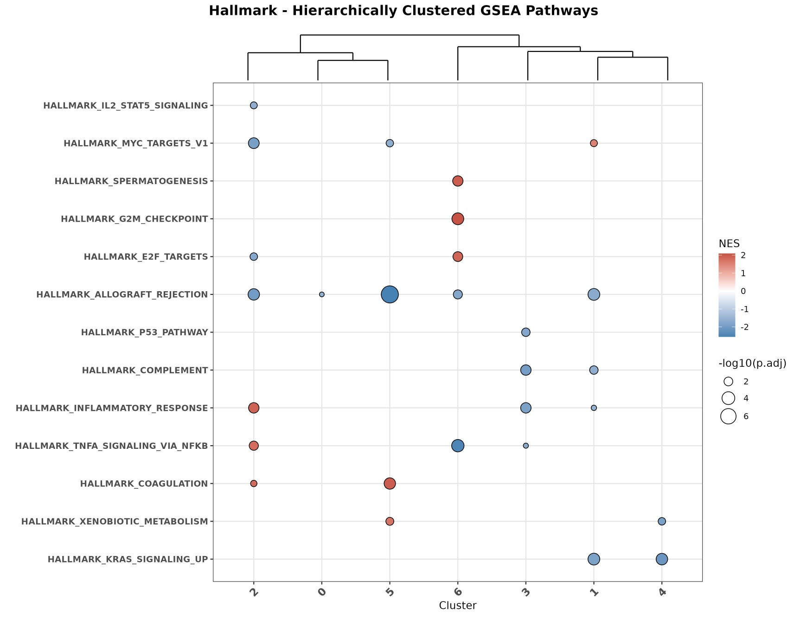
The signed-significance view puts direction and significance on one axis:
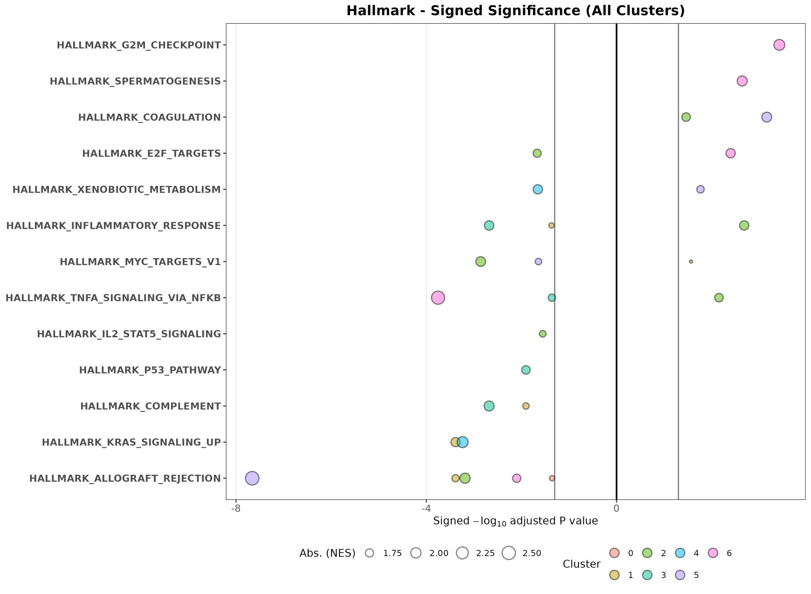
Per-cluster outputs for cluster 2 (CD14 monocytes): the NES dot plot and the running enrichment score of its top pathway.
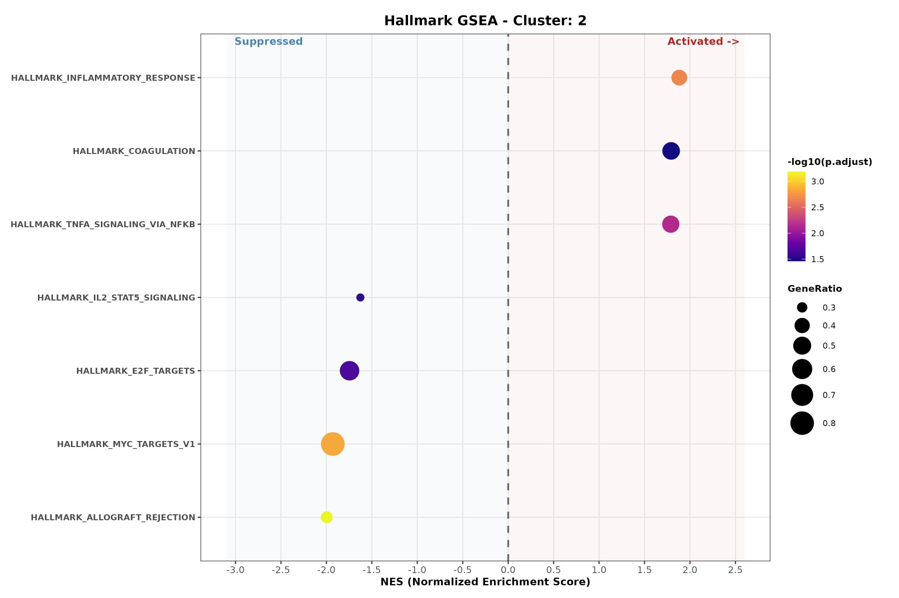
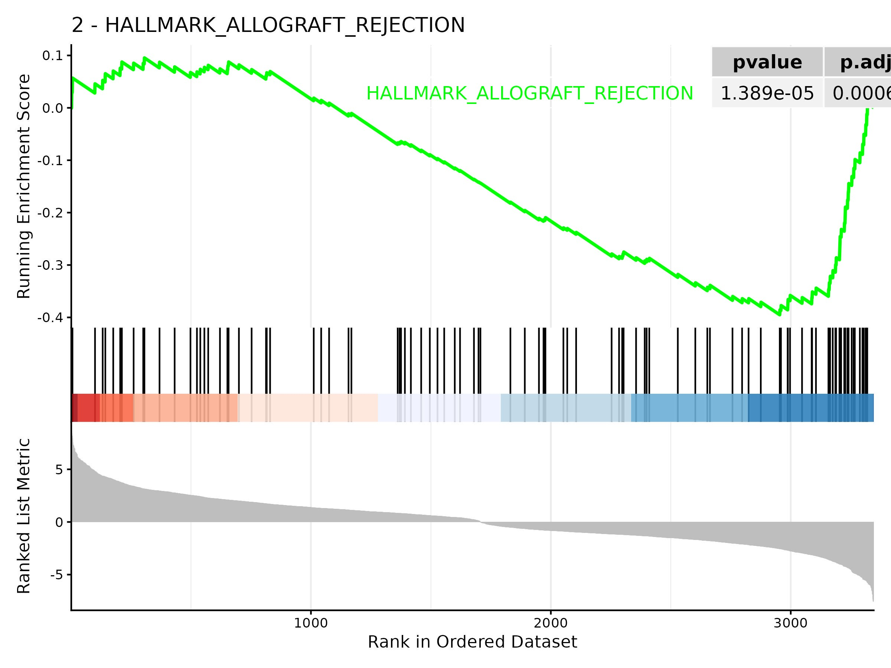
Over-Representation Analysis: run_global_ora()
ORA splits each cluster’s genes into Activated
(avg_log2FC > log2fc_cutoff) and
Suppressed
(avg_log2FC < -log2fc_cutoff) sets at
p_val_adj < padj_cutoff, and tests each set with
clusterProfiler::enricher() against the universe of all
tested genes. With variable_per_clus = TRUE, the function
also draws a signed-significance plot for every cell type.
ora_dir <- file.path(out_dir, "ora")
ora_res <- run_global_ora(
ORA_df = enrich_df,
m_t2g = hallmark,
output_dir = ora_dir,
title_prefix = "Hallmark",
top_n_global = 20,
top_n_per_cluster = 8,
log2fc_cutoff = 0.25,
padj_cutoff = 0.05,
global_width = 11,
global_height = 8,
variable_per_clus = TRUE
)
ora_res %>%
dplyr::count(cluster, cell_type, Direction) %>%
arrange(as.numeric(cluster))
#> cluster cell_type Direction n
#> 1 0 CD4 T Activated 7
#> 2 0 CD4 T Suppressed 4
#> 3 1 CD4 T Activated 2
#> 4 1 CD4 T Suppressed 5
#> 5 2 CD14 Mono Activated 5
#> 6 2 CD14 Mono Suppressed 2
#> 7 3 B Activated 2
#> 8 3 B Suppressed 6
#> 9 4 CD8 T Activated 2
#> 10 4 CD8 T Suppressed 5
#> 11 5 FCGR3A Mono Activated 4
#> 12 5 FCGR3A Mono Suppressed 2
#> 13 6 NK Activated 1
#> 14 6 NK Suppressed 2
#> 15 7 DC Suppressed 1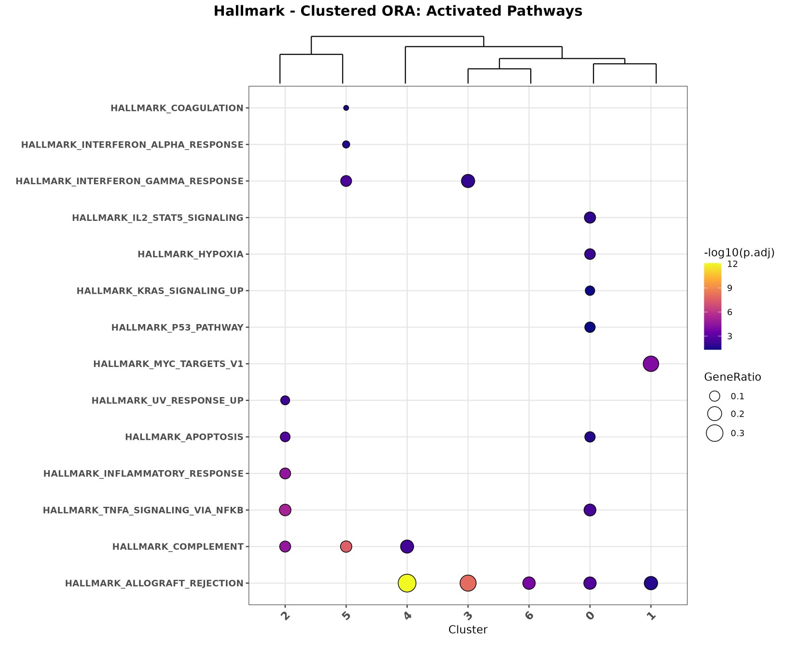
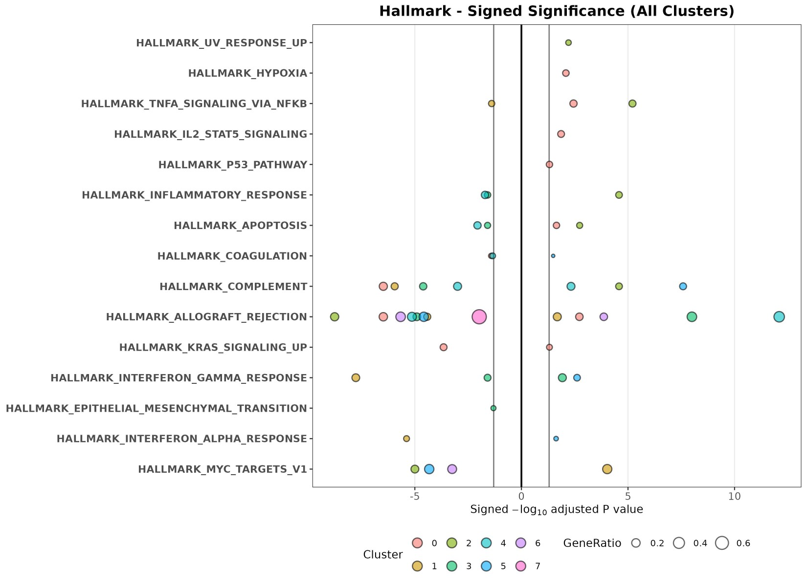
Per-cluster ORA outputs (cluster 2, CD14 monocytes):
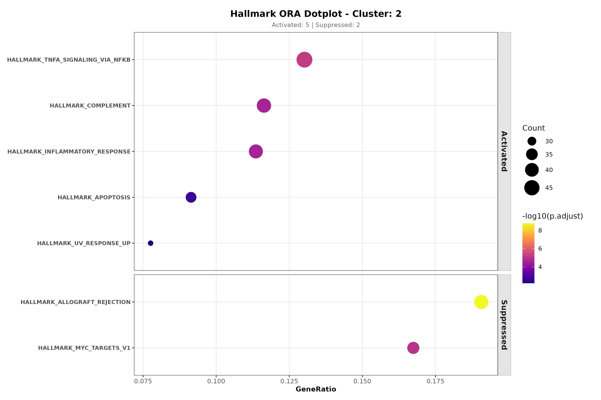
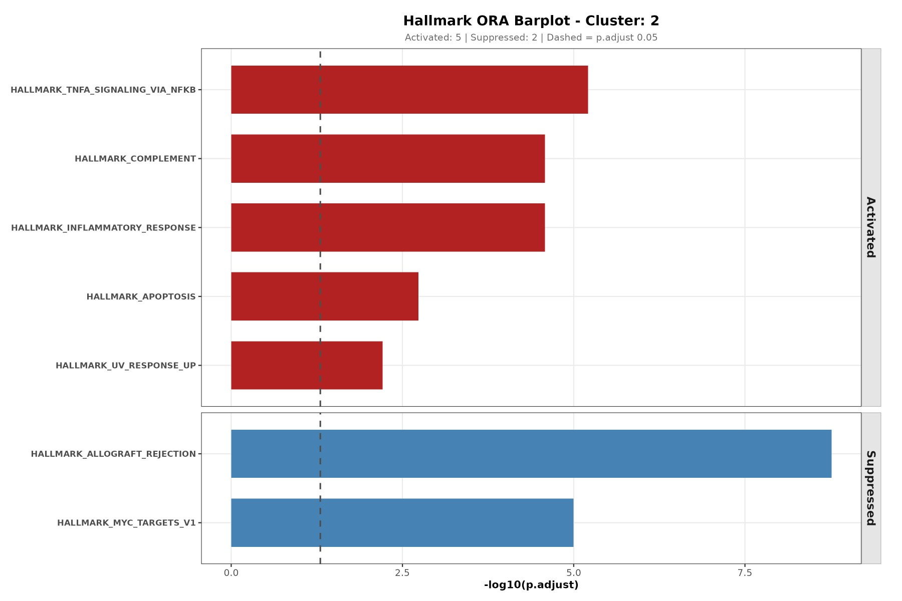
4. Pseudo-bulk differential expression with DESeq2
Cluster markers compare cells. A pseudo-bulk analysis compares
samples: the counts of each donor x population are
summed and analysed with DESeq2, which correctly models donor-to-donor
variability. Here we compare FCGR3A+ with CD14+ monocytes within the
same donors, using a paired design (~ donor + subset).
mono <- subset(pbmc, subset = cell_type %in% c("CD14 Mono", "FCGR3A Mono"))
mono$subset <- ifelse(mono$cell_type == "CD14 Mono", "CD14", "FCGR3A")
pb <- AggregateExpression(mono, assays = "RNA", group.by = c("donor_id", "subset"),
return.seurat = FALSE)$RNA
coldata <- data.frame(
row.names = colnames(pb),
donor = sub("_.*$", "", colnames(pb)),
subset = factor(sub("^.*_", "", colnames(pb)), levels = c("CD14", "FCGR3A"))
)
coldata$severity <- pbmc$severity[match(coldata$donor, pbmc$donor_id)]
dds <- DESeqDataSetFromMatrix(round(pb), colData = coldata, design = ~ donor + subset)
dds <- dds[rowSums(counts(dds) >= 10) >= 3, ]
dds <- DESeq(dds, quiet = TRUE)
res_df <- as.data.frame(results(dds, contrast = c("subset", "FCGR3A", "CD14")))
head(res_df[order(res_df$padj), c("baseMean", "log2FoldChange", "padj")])
#> baseMean log2FoldChange padj
#> LYZ 723.15192 -2.754455 1.411370e-313
#> S100A9 468.42638 -3.446815 6.226475e-243
#> S100A8 240.60757 -4.187309 1.249838e-104
#> IFITM2 127.76440 2.048881 4.342559e-66
#> RPS19 425.32590 1.018986 6.593423e-62
#> FCGR3A 72.34323 4.748685 8.892743e-54Volcano trio: generate_volcano_trio()
The function expects a data frame with gene symbols as row names and
the DESeq2 columns log2FoldChange and padj.
Seurat results can be used after renaming avg_log2FC and
p_val_adj. It returns three volcano plots (made with
EnhancedVolcano) that label, in turn, the top 10 up- and down-regulated
genes, the significant genes from your own target_genes
list, and both together. Genes are labelled only if they pass
padj < 0.05 and |log2FC| >= 1.
volcano <- generate_volcano_trio(
res = res_df,
main_title = "FCGR3A+ vs CD14+ monocytes (pseudo-bulk, paired by donor)",
target_genes = c("FCGR3A", "MS4A7", "CDKN1C", "LST1", "CSF1R",
"CD14", "LYZ", "S100A8", "VCAN", "CCR2")
)
volcano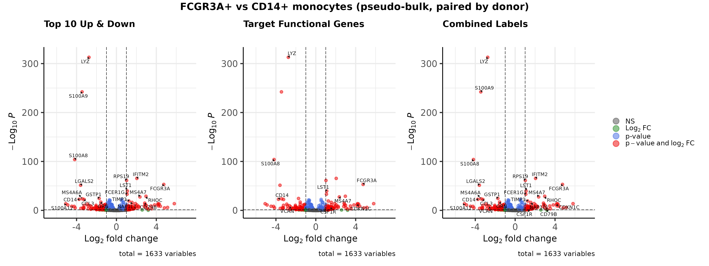
Heatmap of the top genes: get_top_mixed_genes() and
generate_and_save_heatmap()
get_top_mixed_genes() returns the union of the
n_padj most significant genes and the n_lfc
genes with the largest effect, chosen among the strictly significant
ones. This way neither highly significant small changes nor large
effects in lowly expressed genes are missed.
top_genes <- get_top_mixed_genes(res_df, n_padj = 25, n_lfc = 25)
length(top_genes)
#> [1] 40
head(top_genes, 15)
#> [1] "LYZ" "S100A9" "S100A8" "IFITM2" "RPS19" "FCGR3A" "LGALS2" "LST1"
#> [9] "FCER1G" "RHOC" "MS4A7" "GSTP1" "MS4A6A" "CD14" "CCL3"generate_and_save_heatmap() uses these genes to draw two
row-scaled heatmaps of the variance-stabilised counts. The left heatmap
keeps your sample order (ordered_samps) and the right one
clusters the samples freely.
vsd <- vst(dds, blind = FALSE)
anno_col <- as.data.frame(colData(vsd)[, c("subset", "severity")])
ordered_samples <- rownames(anno_col)[order(anno_col$subset, anno_col$severity)]
heatmap_dir <- file.path(out_dir, "deseq2")
generate_and_save_heatmap(
res_obj = res_df,
comp_name = "FCGR3A_vs_CD14",
comp_title = "FCGR3A+ vs CD14+ monocytes",
vsd_data = vsd,
anno_col = anno_col,
ordered_samps = ordered_samples,
n_padj = 25,
n_lfc = 25,
out_dir = heatmap_dir,
ts = format(Sys.time(), "%Y%m%d_%H%M%S"),
clus = "Monocytes"
)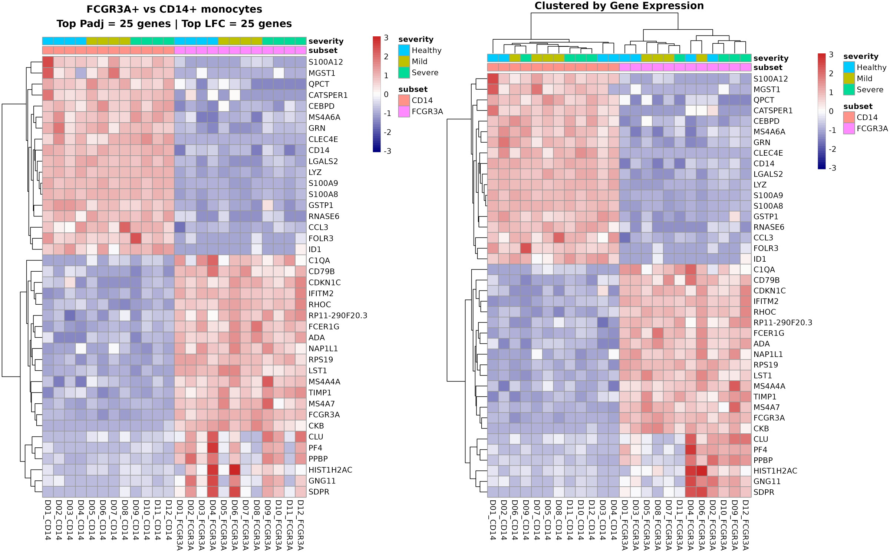
In the unordered (right) heatmap the samples split by monocyte subset, not by the simulated severity. This is expected, because severity was simulated and has no transcriptional effect.
Session information
sessionInfo()
#> R version 4.6.1 (2026-06-24)
#> Platform: x86_64-pc-linux-gnu
#> Running under: Ubuntu 22.04.5 LTS
#>
#> Matrix products: default
#> BLAS: /usr/lib/x86_64-linux-gnu/openblas-pthread/libblas.so.3
#> LAPACK: /usr/lib/x86_64-linux-gnu/openblas-pthread/libopenblasp-r0.3.20.so; LAPACK version 3.10.0
#>
#> locale:
#> [1] LC_CTYPE=C.UTF-8 LC_NUMERIC=C LC_TIME=C.UTF-8
#> [4] LC_COLLATE=C.UTF-8 LC_MONETARY=C.UTF-8 LC_MESSAGES=C.UTF-8
#> [7] LC_PAPER=C.UTF-8 LC_NAME=C LC_ADDRESS=C
#> [10] LC_TELEPHONE=C LC_MEASUREMENT=C.UTF-8 LC_IDENTIFICATION=C
#>
#> time zone: UTC
#> tzcode source: system (glibc)
#>
#> attached base packages:
#> [1] stats4 stats graphics grDevices utils datasets methods
#> [8] base
#>
#> other attached packages:
#> [1] future_1.76.0 DESeq2_1.52.0
#> [3] SummarizedExperiment_1.42.0 Biobase_2.72.0
#> [5] MatrixGenerics_1.24.0 matrixStats_1.5.0
#> [7] GenomicRanges_1.64.0 Seqinfo_1.2.0
#> [9] IRanges_2.46.0 S4Vectors_0.50.3
#> [11] BiocGenerics_0.58.1 generics_0.1.4
#> [13] msigdbr_26.1.1 ggplot2_4.0.3
#> [15] dplyr_1.2.1 OHMmy_1.0.2
#> [17] Seurat_5.6.0 SeuratObject_5.4.0
#> [19] sp_2.2-3
#>
#> loaded via a namespace (and not attached):
#> [1] fs_2.1.0 spatstat.sparse_3.2-0 enrichplot_1.32.1
#> [4] httr_1.4.9 RColorBrewer_1.1-3 tools_4.6.1
#> [7] sctransform_0.4.3 backports_1.5.1 utf8_1.2.6
#> [10] R6_2.6.1 lazyeval_0.2.3 uwot_0.2.5
#> [13] withr_3.0.3 gridExtra_2.3.1 progressr_1.0.0
#> [16] cli_3.6.6 textshaping_1.0.5 spatstat.explore_3.8-3
#> [19] fastDummies_1.7.6 scatterpie_0.2.6 labeling_0.4.3
#> [22] sass_0.4.10 S7_0.2.2 spatstat.data_3.1-9
#> [25] ggridges_0.5.7 pbapply_1.7-5 pkgdown_2.2.1
#> [28] systemfonts_1.3.2 yulab.utils_0.2.5 gson_0.2.1
#> [31] DOSE_4.6.0 parallelly_1.48.0 RSQLite_3.53.3
#> [34] gridGraphics_0.5-1 ica_1.0-3 spatstat.random_3.5-2
#> [37] car_3.1-5 GO.db_3.23.1 Matrix_1.7-5
#> [40] abind_1.4-8 lifecycle_1.0.5 SoupX_1.6.2
#> [43] yaml_2.3.12 carData_3.0-6 qvalue_2.44.0
#> [46] SparseArray_1.12.3 Rtsne_0.17 grid_4.6.1
#> [49] blob_1.3.0 promises_1.5.0 crayon_1.5.3
#> [52] miniUI_0.1.2 ggtangle_0.1.3 lattice_0.22-9
#> [55] cowplot_1.2.0 KEGGREST_1.52.2 pillar_1.11.1
#> [58] knitr_1.52 future.apply_1.20.2 codetools_0.2-20
#> [61] glue_1.8.1 ggiraph_0.9.6 leidenbase_0.1.37
#> [64] fontLiberation_0.1.0 ggfun_0.2.1 spatstat.univar_3.2-0
#> [67] data.table_1.18.6.1 EnhancedVolcano_1.30.0 treeio_1.36.1
#> [70] vctrs_0.7.3 png_0.1-9 spam_2.11-4
#> [73] gtable_0.3.6 assertthat_0.2.1 cachem_1.1.0
#> [76] xfun_0.61 S4Arrays_1.12.1 mime_0.13
#> [79] tidygraph_1.3.1 survival_3.8-6 aisdk_1.4.12
#> [82] pheatmap_1.0.13 fitdistrplus_1.2-6 ROCR_1.0-12
#> [85] nlme_3.1-169 ggtree_4.2.0 fontquiver_0.2.1
#> [88] bit64_4.8.6 RcppAnnoy_0.0.23 bslib_0.12.0
#> [91] irlba_2.4.1 KernSmooth_2.23-26 otel_0.2.0
#> [94] DBI_1.3.0 tidyselect_1.2.1 processx_3.9.0
#> [97] bit_4.6.0 compiler_4.6.1 httr2_1.3.0
#> [100] fontBitstreamVera_0.1.1 desc_1.4.3 ggdendro_0.2.0
#> [103] DelayedArray_0.38.2 plotly_4.12.1 scales_1.4.0
#> [106] lmtest_0.9-40 callr_3.8.0 rappdirs_0.3.4
#> [109] stringr_1.6.0 digest_0.6.39 goftest_1.2-3
#> [112] spatstat.utils_3.2-5 rmarkdown_2.32 XVector_0.52.0
#> [115] jpeg_0.1-11 htmltools_0.5.9 pkgconfig_2.0.3
#> [118] fastmap_1.2.0 rlang_1.3.0 htmlwidgets_1.6.4
#> [121] shiny_1.14.0 farver_2.1.2 jquerylib_0.1.4
#> [124] zoo_1.9-1 jsonlite_2.0.0 BiocParallel_1.46.0
#> [127] GOSemSim_2.38.3 magrittr_2.0.5 Formula_1.2-6
#> [130] ggplotify_0.1.3 dotCall64_1.2 patchwork_1.3.2
#> [133] Rcpp_1.1.2 gdtools_0.5.1 ape_5.8-1
#> [136] ggnewscale_0.5.2 viridis_0.6.5 reticulate_1.47.0
#> [139] stringi_1.8.9 ggraph_2.2.2 MASS_7.3-65
#> [142] plyr_1.8.9 parallel_4.6.1 listenv_1.1.0
#> [145] ggrepel_0.9.8 deldir_2.0-4 Biostrings_2.80.2
#> [148] graphlayouts_1.2.5 splines_4.6.1 tensor_1.5.1
#> [151] locfit_1.5-9.12 ps_1.9.3 igraph_2.3.4
#> [154] ggpubr_1.0.0 spatstat.geom_3.8-3 ggsignif_0.6.4
#> [157] enrichit_0.2.5 RcppHNSW_0.7.0 reshape2_1.4.5
#> [160] evaluate_1.0.5 tweenr_2.0.3 httpuv_1.6.17
#> [163] RANN_2.6.3 tidyr_1.3.2 purrr_1.2.2
#> [166] polyclip_1.10-7 scattermore_1.2 ggforce_0.5.0
#> [169] broom_1.0.13 xtable_1.8-8 tidytree_0.4.8
#> [172] RSpectra_0.16-2 tidydr_0.0.6 rstatix_1.1.0
#> [175] later_1.4.8 viridisLite_0.4.3 ragg_1.5.2
#> [178] tibble_3.3.1 clusterProfiler_4.20.0 aplot_0.3.2
#> [181] memoise_2.0.1 AnnotationDbi_1.74.0 cluster_2.1.8.2
#> [184] globals_0.19.1